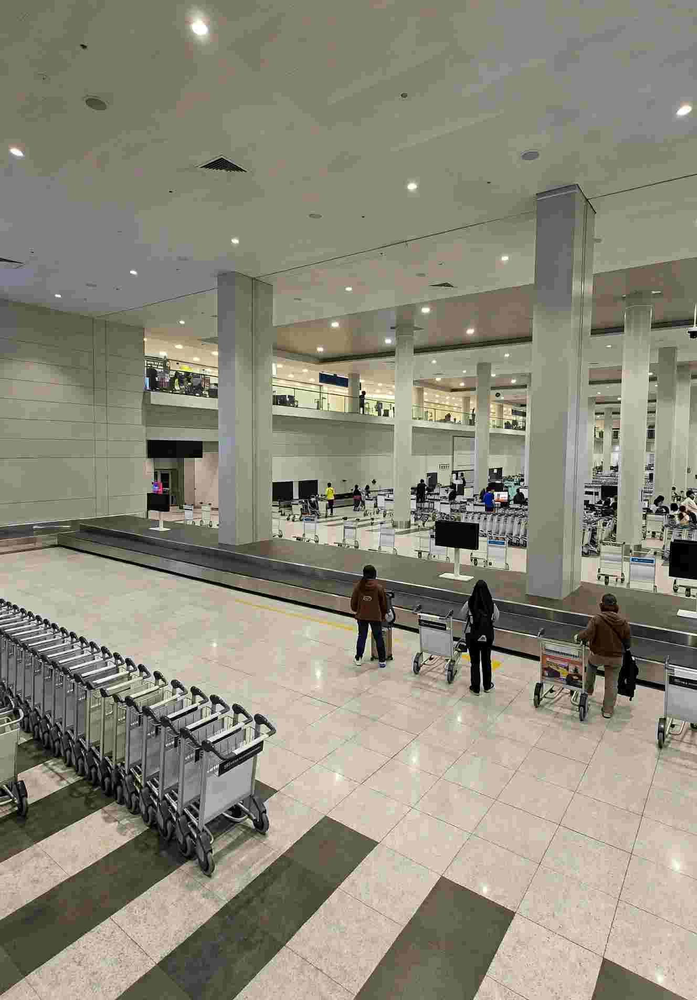

Your first hour in the Philippines usually comes down to three jobs: registering for eTravel before you board, getting a SIM that works as soon as you walk out of arrivals, and carrying the right mix of cash and card. Handle them in that order and immigration, the taxi queue and your first meal feel far less stressful.
Skip one of them and the day gets slower. Miss eTravel and you may be stopped at check-in abroad. Leave the SIM for later and you spend your first ride without a map. Arrive with only a credit card and you will find out quickly that many tricycles and market stalls want pesos in hand. This guide sets out what is required right now, what things typically cost, and what to have ready before you fly.
Think of these steps as a short checklist rather than a set of rules you memorize. Each one takes a few minutes if you do it early, and each one causes trouble if you leave it until the airport.

1. eTravel: free, online, and required for everyone
The Philippines eTravel system applies to every traveler entering or leaving the country, whatever your nationality or visa status. It replaced the old paper arrival card and the One Health Pass. Airlines check for it before boarding, and immigration officers ask to see it on arrival.
Registration is free at etravel.gov.ph. You enter your passport details, flight number, address for your first night and contact information, and the system issues a QR code. Submit it within 72 hours before departure. Save a screenshot and keep the code on your phone, because you will scan it at boarding and again at immigration. Children need their own registration as well, so do not assume a family member's record covers them.
Be wary of any website that asks you to pay. There is no legitimate fee for this registration, so a paid page is either a clone or a middleman charging for a free service. Before you submit, check that the flight number matches your boarding pass, and charge your phone before you leave for the airport.
2. SIM cards: register on the spot, plan around 30 days
Under the SIM Registration Act (Republic Act 11934), every SIM must be registered, including tourist SIMs and eSIMs bought inside the country. A SIM you buy at the airport will not work until you complete registration, which is why many first-time visitors lose half an hour waiting on their first call.
Globe and Smart run kiosks at NAIA's terminals, at Mactan-Cebu Airport and at other international gateways. Kiosk staff usually walk you through the form, which takes around 15 to 30 minutes including a live selfie. You will need your passport, a Philippine address (your hotel's name and address is accepted), and your return or onward ticket. Globe tends to be the smoothest choice for tourists at NAIA Terminal 3, but queues change through the day, so compare the lines before you commit. A carrier kiosk is safer than a reseller, since the staff can register you and test the connection before you walk away.
A tourist SIM registered under a foreign passport is valid for 30 days and then deactivates automatically. If your trip runs longer, visit a Globe or Smart store to request an extension with proof of your stay.
Which carrier to choose
Globe has the widest coverage and is the sensible default once you leave the big cities. Smart is often the stronger option for speed in Manila, Cebu and other urban areas. DITO can be the fastest and cheapest where it reaches, but its coverage in rural areas is limited, so treat it as a backup SIM rather than your only line.
Globe and Smart both sell eSIMs to tourists, so you can scan a QR code and activate before you land. The same registration and 30-day rule applies to a Philippine eSIM bought locally. A roaming eSIM from your home country needs no local registration, but it usually costs more for data.
Starter packs with data typically run from about PHP 300 to PHP 700. Short promos for 7 to 30 days, such as Globe Go or Smart Giga bundles, often cost between PHP 100 and PHP 500. Airport prices sit slightly above mall prices, but you pay for registration help along with the data.
3. Cash or card: carry both, and keep pesos for daily life
The Philippine peso (PHP) is the currency you will use most. Cards work in Manila malls, larger hotels and chain restaurants, but islands and small towns often run on cash, and some add a surcharge of around 3 to 5 percent when you pay by card. Visa and Mastercard are widely accepted in cities. American Express is accepted in fewer places.
When a card terminal asks whether to charge you in your home currency, choose pesos. Paying in your own currency triggers dynamic currency conversion, which usually gives you a worse exchange rate. Cash is the simpler option for tricycles, jeepneys, local markets, small guesthouses, island boat transfers, entrance fees and many tour desks outside Manila and Cebu. Plenty of boat operators in Boracay and Siargao are cash-only too.
ATMs and withdrawal fees
BDO has the largest ATM network in the country, followed by BPI, Metrobank and BPN. Airports have several machines, but the queues can be long at peak arrival times. Most machines charge about PHP 250 for a foreign card withdrawal. Some HSBC and Citibank machines allow larger withdrawals, up to PHP 20,000 to PHP 40,000 per transaction, while many other machines cap you at around PHP 10,000.
Tell your bank before you travel so the card is not blocked for foreign use. Some ATMs run short of cash over the weekend and are not restocked until Monday, so do not leave your withdrawals until Sunday. Withdraw a larger amount at once to cut down on repeated fees. ATMs on small islands are scarce and often offline, so take out enough cash in Manila, Cebu or Iloilo before you head to places like Malapascua, Siargao or Apo Island.
For a bigger exchange, money changers usually offer better rates than airport counters, and rates in Manila tend to beat those on the islands. Ermita, Makati and Cebu City have plenty of options. Change a small amount of US dollars at the airport if you need cash straight away, then do the rest in town. Keep your receipts, since some changers ask for them if you want to exchange leftover pesos back before you leave.
Plan to carry two or three days of cash before any island stop. Keep your daily money in a wallet and your reserve in a hotel safe or a money belt. Break PHP 1,000 notes whenever you can, because small vendors often have no change for them. Tricycle drivers and market sellers rarely do.
4. A short checklist before you fly
- 72 hours before departure: register eTravel at etravel.gov.ph and save the QR code to your phone.
- Phone: unlock it, bring your SIM pin, and decide between Globe and Smart. If your phone supports eSIM, you can order a local one in advance.
- Money: bring some US dollars and at least one Visa or Mastercard debit card. Tell your bank you are travelling and plan to withdraw pesos in Manila or Cebu before going to the islands.
- Documents: make sure your passport has at least six months of validity left, and keep your return ticket handy, since the SIM form may ask for it and immigration sometimes does too.
- Apps: install Grab, your airline app and GCash (note that GCash needs a local number to verify), and download offline maps for areas where signal drops.
Start with the paperwork, then plan the trip
Do eTravel first because it is mandatory and free. Then sort your SIM: Globe for the widest coverage, Smart for city speed, and set aside about half an hour at the airport for registration. Finally, sort your cash by withdrawing enough pesos in a city before you reach an island and carrying small bills for everyday purchases.
With those three done, your arrival is covered and you can focus on the trip itself. If you have a day or so in Manila first, our 24 hours in Manila guide shows how to fit Intramuros into a short stopover. For a sense of what the rest of the trip costs, see the travel budget breakdown, which compares ferry and flight costs between the main islands.